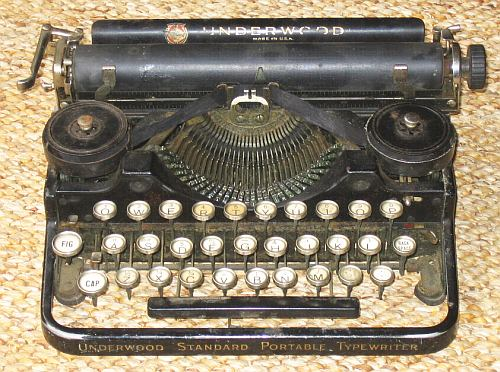
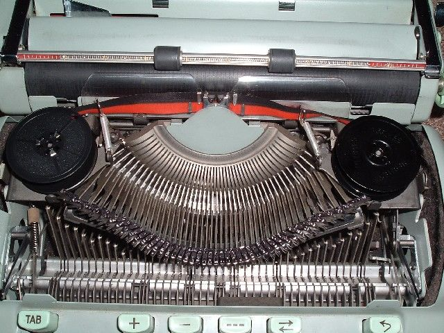
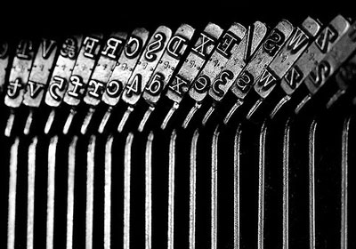
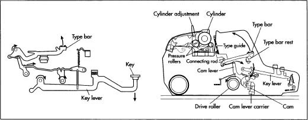
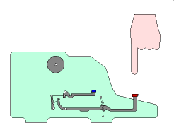
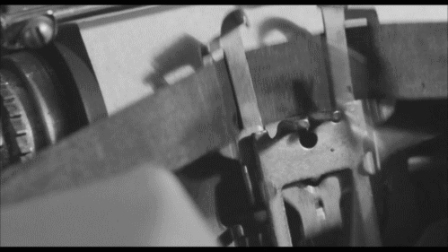
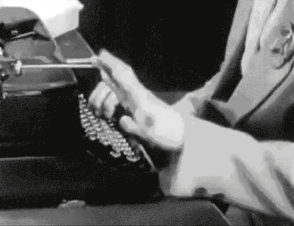

打字机就是用来打字的，机械打字机就是通过机械运动来打字的打字机，其他的还有 激光打字机，他们的区别类似于机械鼠标和光电鼠标之间的区别。

下面是一个机械打字机的内部视图，

横着的黑色圆筒放置纸张，红色彩带以及它上面的黑色彩带叫做“色带”，其上沾有油墨， 什么颜色的色带就能打出什么颜色的文字，色带两边的两个黑色圆形盒子是色带盒， 两个色带盒之间的部分是“字盘”，字盘由一堆字锭(typebar)组成，字锭就是印有字母的金属块， 注意字母都是“反”着印的，见下图，

下图则是打字机的内部草图，

了解了机械打字机内部组成之后，我们来看看它是如何工作的。
键盘上每一个字符，不论是字母还是符号，都对应到一个字锭(typebar)， 当按下某个键之后，该字锭就会打击色带，进而隔着色带击打到纸张上面， 对应的字母就会被打印到纸上，

上图中圆圈代表放置纸张的圆筒，其上放有纸张，击打圆筒的就是字锭，在字锭与圆筒之间 还应该有一个色带，图中并没有画出。下图则是打字机实际工作的情形，字锭在不停的击打 色带，每次字锭击打过来时，色带就准备好，迎接字锭的击打，击打完成之后圆筒带着纸张 往左一定一个格，用来打印下一个字符。

注意看字锭的柄，有时是正对着色带，而有时则是歪着的，这是因为字盘是圆形的，但是 不论何时，字锭总是正对着色带进行击打。
另外还需注意，字锭只做击打动作，并没有左右移动，左右移动，从而使得文字成行的是 纸张(圆筒)。
随着纸张不断往左移动，文字被印成一行，但是当到达纸张的右端，即一行被印完了，又该 怎么办呢？
一行打印完成之后，需要打印下一行，这需要两个动作来完成，

现代计算机中的回车(Carriage Return)换行(Line Feed)就是来自于打字机的这种设计。
(全文结束)